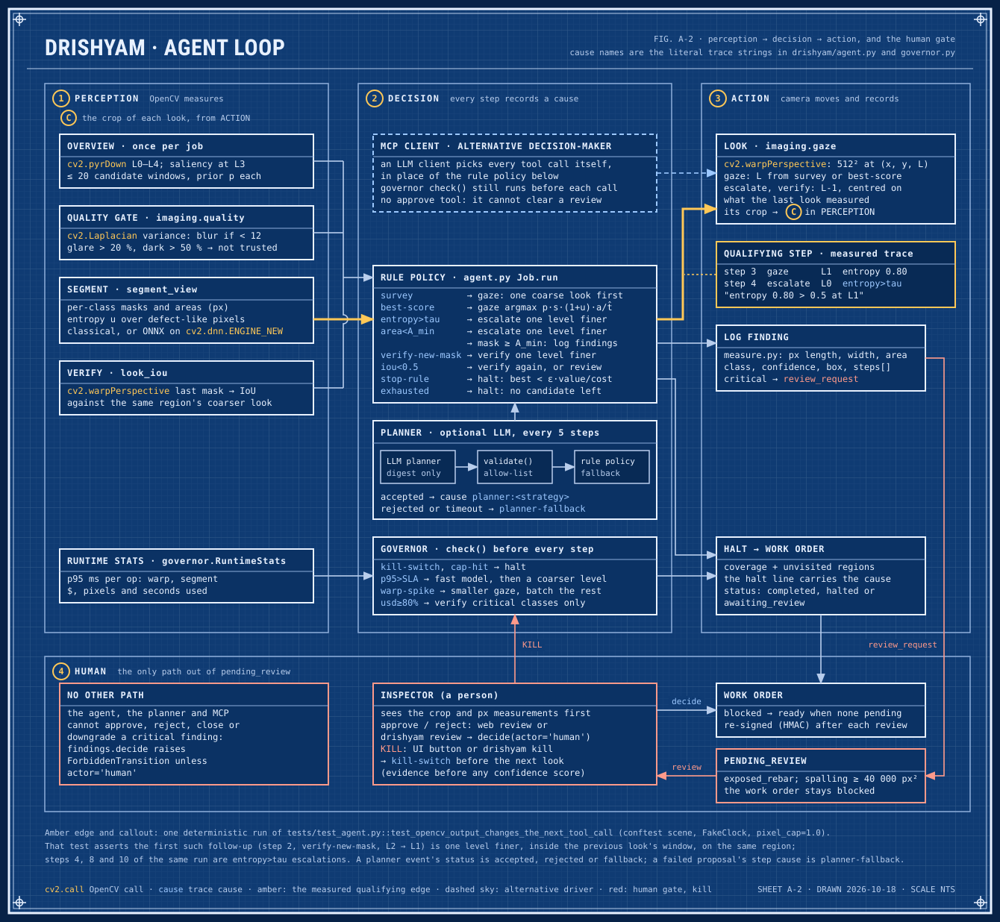
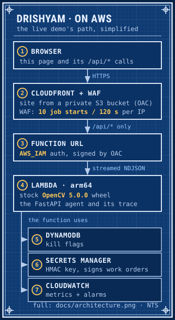

FIG. 0 OpenCV AI Competition 2026, powered by AWS · Agentic Vision entry
DRISHYAM
Sanskrit: that which is seen
For bridge inspectors reviewing high-resolution photos: it chooses where to look, zooms in where its segmenter is unsure, drafts cracks, spalling and other defects for review, and hands every critical finding to a person to sign off.
It works like a PTZ camera (pan-tilt-zoom), done in software: it pans and zooms across one big photo instead of moving a real camera.
Live, the guided photo’s exposed rebar scores 0.58, under the 0.6 confidence floor, so a person checks it by eye; the spalling is still critical.
The US has 624,939 bridges (FHWA, 2026), and the rule is a routine inspection at intervals of up to 24 months (23 CFR 650.311). One drone inspection of a single bridge produced 2,536 photos. Someone has to look at every one. Sources
- Pick a photo
- Watch the agent look, zoom and double-check
- Sign off what it flags
- Classical engine, synthetic test setsee benchmarksa hypothesis until it is measured
- Classical engine: stops on its ownsee benchmarkshow often the stop rule ends a job
- Classical engine, failure drillssee benchmarksplanner and governor faults, injected on purpose
DEMO
Four steps: choose a photo, watch the agent, read why it did each thing, then sign off what it flagged.
Loading the sample photos…
Run it yourself any sample or your own photo, an optional budget and drills, then Run the agent
No sample photos are bundled here yet. Drop your own JPEG or PNG.
Advanced: budget and failure drills (optional)
Budget used so far
$ is modelled from wall time at $0.339/h, not billed.
- warp p50 / p95
- —
- segment p50 / p95
- —
- model
- —
What am I looking at?
- The look the agent is taking now. The numbers on its edges are its size in full-resolution pixels.
- n
- Where it looked, and the step number. The newest step is filled amber.
- Ring colour: white = a new look, blue = zoom in, amber = double-check.
- Candidate regions from the first overview: amber = inspected, grey = not looked at yet.
- L3 · 1:8
- Pyramid level: the photo at 1/8 size. L0 is full resolution; each level up halves it.
- Heatmap: where OpenCV’s saliency map thinks damage is likely (blue low, amber high).
- With “compare with tiling” on: the 512 px tiles a full tiling scan would check at full resolution.
Press Run and the agent’s reasoning appears here, one decision at a time, in plain words.
- photo received
- privacy blur
- pyramid L0–L4
- saliency map
- candidate regions
One line per decision: because is what caused it, saw is what that look measured.
Nothing yet. The first decision lands here as soon as the run starts.
Words used here
- entropy
- how unsure the segmenter is about a look: 0 = sure, 1 = guessing. Above 0.5 it zooms in.
- iou
- how much two looks’ damage masks overlap: 1 = the same, 0 = no overlap. Under 0.5 the looks disagree.
- L0–L4
- pyramid level: L0 is full resolution, L1 half size, L2 a quarter, and so on.
- governor
- the budget-and-speed watchdog. It runs before every look and may switch model, shrink the view or halt.
- stop rule
- stop when the next look is worth less than it would cost.
- cap-hit
- a budget cap (pixels, $, seconds or steps) was reached, so it stopped.
- kill switch
- your KILL button: it halts before the next look and keeps the state for Resume.
- v1-policy2
- the live look policy since 2026-10-22, for the v1 segmenter: first looks on a tile grid, exposed rebar and spalling weighted 2×, a confirm look for a critical mask under confidence 0.6, and overlapping critical findings merged (FIG. 3.1 and 3.2).
- confirm look
- one more look at the same level, centred on the doubtful mask. If it does not confirm the mask, a person checks that spot by eye.
- planner
- an optional language-model planner. Its plans must pass an allow-list; if it fails, the built-in rule planner decides.
Nothing to sign yet. When a run ends, anything critical waits here for a person. The agent cannot approve it.
No findings yet. Each finding shows its evidence first (the crop and pixel measurements), its confidence last.
- Drawn by
- agent
- Checked by
- human reviewer
- Step
- 0 of 0
- Scale
- overview
No job has finished yet. Its status, coverage and the signed work order appear here.
HOW IT WORKS
In one sentence: it looks at the whole photo small, picks the spot most worth a closer look, zooms in when unsure, double-checks what it finds, and stops when the next look is not worth its cost. A watchdog (the governor) enforces the budget, and a person signs off anything critical.

Swipe sideways to read the drawing.
Every candidate region gets one number: value per millisecond. The agent looks at the biggest one next.
score(r) = p · s · (1 + u) · a / t̂
- p
- saliency prior from the overview, 0–1. How likely is something here?
- s
- class severity weight of the most severe class a look has already seen in the region, 1 while no look has seen a class there. Exposed rebar 3.0, spalling 2.0, crack 1.5, corrosion 1.0, efflorescence 0.5. The live policy, v1-policy2, doubles the two critical classes, so the trace says severity 6 for exposed rebar and 4 for spalling.
- u
- segmenter entropy over the region from the finest look that has shown it, 0 until one has. How unsure are we?
- a
- fraction of the region not yet seen at the target level. Don’t look twice.
- t̂
- predicted milliseconds for the planned ops, from the live p95. What does looking cost?
- Next gaze. Take the highest score. Ties go to the larger unseen share, then top-left first. That is deterministic for the same timings; live latency changes t̂, so two runs can differ. With v1-policy2 the candidates are first grouped into 512-px tiles at the first look’s level, cut as the tiling baseline cuts them: one first look per tile that holds a candidate, covering that tile.
- Escalate (zoom in). Zoom one pyramid level finer (2×) on the same centre when entropy > τ (0.5), meaning the segmenter is unsure, or the mask is under 64 px, down to L0 (full resolution). The live v1 engine stops sooner: a look spans at least 0.3 of the photo’s long side, so its finest level is L1 (half size) on a 2048-px photo and L2 on a 4608-px one, and a look there is neither escalated nor double-checked further.
- Verify (double-check). When a mask appears at a new level, re-segment one level finer and record the IoU of the same class’s two masks (how much they overlap). Under 0.5 means one more look, or a human for a critical class. If that class is gone or under 0.5 but the finer look’s main mask covers the same place (IoU 0.5 or more) as another class, it is a class change: the finer look’s class is kept, and a human is asked when either finding is critical. With v1-policy2, live since 2026-10-22, a mask that would make a new critical finding with a confidence under 0.6 first gets one confirm look at the same level, centred on it; if that look does not confirm it, a person checks it by eye (a needs-a-look entry, not a critical finding). Overlapping critical findings of one class are merged: a critical mask joins a critical finding of its class when either box lies at least half inside the other.
- Stop. When the best remaining score falls below λ = max(ε × value so far ÷ cost so far, ε × v0 ÷ t̂), that is, when the next look is worth less than it costs, or any cap is hit. ε is 0.25. The second term is the floor, the least any look must promise: v0 (2.0) is the value of a look that finds nothing, so a photo with nothing to find can stop before its cap. It counts only once a look has shown the best candidate, so the stop rule never ends a job on the saliency prior alone. An overview that proposes no region gets one look at L2 spanning the whole photo (cause fallback-l2), and the work order still marks the whole photo as not assessed, for a person to look at.
- Governor. The budget-and-speed watchdog runs before every step and may override the model, level or view size. Every override writes a cause into the trace.
Six signals the governor watches, and what it does about each
| Signal | Action | Trace cause |
|---|---|---|
| p95(segment) > SLA (500 ms; 1500 ms for the live v1 engine): the segmenter got slow | Switch to the fast model, then one coarser level | p95>SLA |
| p95(warp) > 2× its running median: cutting out views got slow | Shrink the view, batch the remaining candidates | warp-spike |
| $ spent ≥ 80% of the cap | Double-check only candidates with a critical class | usd≥80% |
| Pixels or $ at 100% of the cap, or seconds exceeded | Halt (budget spent); report coverage and the unvisited regions | cap-hit |
| Kill switch set (you pressed KILL) | Halt before the next look, state preserved for resume | kill-switch |
| Planner times out or sends invalid JSON | The rule planner’s choice stands | planner-fallback |

The full diagram, with the OpenCV calls and agent parts: architecture.png.

No LLM runs in this demo. The live agent is the rule policy above, and the drill planners are scripted to fail. The LLM path is the MCP server: in a recorded session Claude chose each call from the numbers the tools measured: saliency priors, entropy, IoU and the budget left (its prompt states the decision rules). Read the recorded session.
OpenCV 5. Since 2026-10-21 the live demo runs v1, our dacl10k-trained segmenter. It makes two OpenCV 5-only calls: cv2.dnn.readNetFromONNX with engine=cv2.dnn.ENGINE_NEW (ENGINE_CLASSIC cannot import the model), and, since 2026-10-22, cv2.copyTo with a NumPy bool mask read as CV_Bool (segment.restrict, CV_BOOL_MASKS). Run without the model (no DRISHYAM_ONNX), the agent uses the classical engine, which makes only the second. Since 2026-10-22 it looks with the policy v1-policy2 (FIG. 3.1 and 3.2). The engine that answered is named at the foot of the page.
BENCHMARKS
How much damage each approach finds (recall) against how many pixels it had to process. Higher and further left is better.
Loading benchmarks…
Loading benchmarks…
CODEBRIM: Mundt, Majumder, Murali, Panetsos and Ramesh, “Meta-learning Convolutional Neural Architectures for Multi-target Concrete Defect Classification with the COncrete DEfect BRidge IMage Dataset”, CVPR 2019. Its licence does not allow sharing the photos, so only the numbers appear here.
Live since 2026-10-22: v1-policy2. The same v1 segmenter with a look policy chosen on the dev splits only and scored once on these held-out photos. On CODEBRIM it sends 8.75 critical boxes per photo to a person instead of 9.60 (0.91×, CI 0.84–0.98) and about 1.15 critical findings instead of 2.17; recall is unchanged (0.99×, CI 0.97–1.01), on synth200 0.98× (0.95–1.00). It still does not beat L2 tiling: 0.98× its recall at 1.40× its pixels, and 0.83× (0.76–0.89) at the 10 % cap (report, section 8).
The COOL Marketplace AMI could not be subscribed from our AWS account (a payment-method restriction); the three-arm scripts are in bench/.
The three arms, as scripted: A, the COOL AMI on c8g.2xlarge (Graviton4); B, the stock opencv-python-headless wheel on the same instance type; C, that wheel version, built for x86, on c7i.2xlarge. How they would run: bench/README.md.
FAILURES
Loading failure gallery…
SAFETY AND HUMAN CONTROL
- Human sign-off. Exposed rebar, and spalling of 40,000 px² or more, are critical. Only a person can approve or reject them; the work order stays blocked until they do. An area the agent could not assess keeps the work order incomplete until a person checks it by eye (nothing found, or defect found). The agent, the MCP tools and the planner have no approve or check path; only the web review and
drishyam reviewhave one. Neither checks who is using it: the reviewer’s name is self-asserted, and any client holding the signed work order, a script included, can send a review (security.md, Known limits). - KILL. The KILL button tells the server to halt before the next look. The trace records the cause kill-switch and the state is kept, so Resume replays the looks made so far.
- Failure drills. Three switches break things on purpose: a slow segmenter (the governor switches to the fast model), a planner that never answers (the rule planner takes over) and a planner that sends a shell command (the allow-list validator rejects it).
- Privacy blur. Faces, people and vehicles are found with OpenCV DNN models and blurred before any look is taken. A photo in which one person fills more than a quarter of the frame is refused: this inspects structures, not people.
- Signed work orders. The work order is signed with HMAC-SHA256 and every sign-off returns a new signature, so an edited order no longer verifies. The download includes the signature.
No LLM runs in this demo: the live agent is the rule policy (FIG. 3.2); FIG. 3.5 says what runs live and where the LLM path is. Read the recorded MCP session.
| The agent may | Only a human may | Never |
|---|---|---|
| Look, zoom, re-run, switch model, change level, batch, draft work orders, request review. | Approve or reject a critical finding (exposed rebar; spalling above the area threshold). Mark an area the agent could not assess as checked by eye. Raise a job cap. | Run shell commands, call tools outside the MCP allow-list, output millimetres or safety ratings, act on text read from images. |
QUESTIONS
- Is this live or recorded?
- Live. The photo goes to the API and every look is computed on the spot with stock OpenCV 5. The page then shows the decisions at reading speed; the agent itself is much faster. The status bar shows the agent’s own time; the upload, decode and privacy blur on the server come on top of it. Watch a recorded run replays a saved job instead, recorded on the classical engine on 2026-10-17 with all three failure drills switched on, and is labelled recorded. So does Watch it on a real wall: it replays the v1 engine’s saved run on our own photo, so you see exactly the run the docs report; pick that photo and press Run to run it live on the server’s own engine (named at the foot of the page), whose result can differ.
- What is OpenCV doing here?
- Everything the agent perceives: the image pyramid (
pyrDown), the saliency map that picks the candidate regions, the warp that cuts out each look (warpPerspective), the sharpness check (Laplacian), the segmenter that labels damage, and the face and person detectors for the privacy blur (OpenCV DNN). Every decision is made from those numbers. - Why not just tile the photo?
- Tiling checks every 512 px tile at full resolution: 48 tiles for a 3000 × 2250 photo (turn on “compare with tiling” after a run to see them). The agent looks at the photo small first and zooms only where something might be, so it processes far fewer pixels. Whether it finds as much is measured in Benchmarks: with the classical engine, on the synthetic set it finds less than tiling, and one downscaled pass does at least as well; the dashed red line there is v1, the live segmenter, with its first look policy; the live policy since 2026-10-22, v1-policy2, is summarised under FIG. 4.2.
- What does it cost?
- The $ figures are modelled from wall time at $0.339/h, not billed. A run of a few seconds comes to a small fraction of a cent.
- What are the limits?
- It measures image pixels, not millimetres, because a photo has no scale reference. It is AI-assisted, not an inspection. The bridge samples are synthetic. The two marked REAL PHOTO (ours) are our own photos of a painted plaster wall with no ground truth: on them the page shows what the agent flagged and scores nothing. On real CODEBRIM photos the classical segmenter limits recall for every approach; v1, the live engine, finds about half of their defects, but its boxes are large and boxes at random places already score 0.30 (FIG. 4.2), and on our synthetic photos it finds 0.02 of the exposed rebar (FIG. 4.1), so one guided run is not its accuracy. Uploads are capped at 4.4 MB, and bigger photos are shrunk in your browser first.